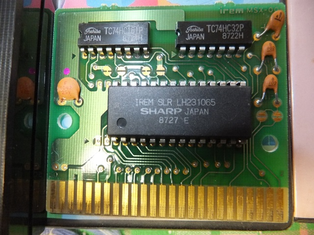
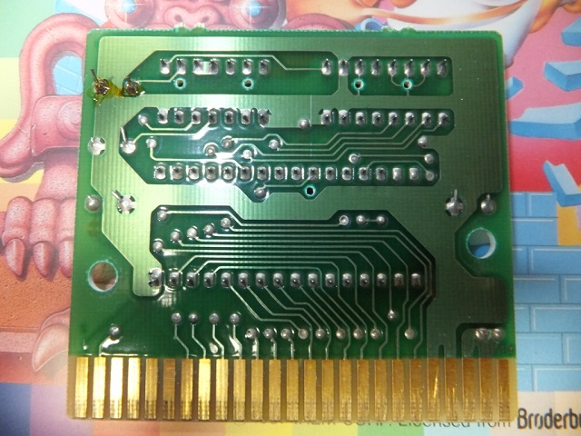
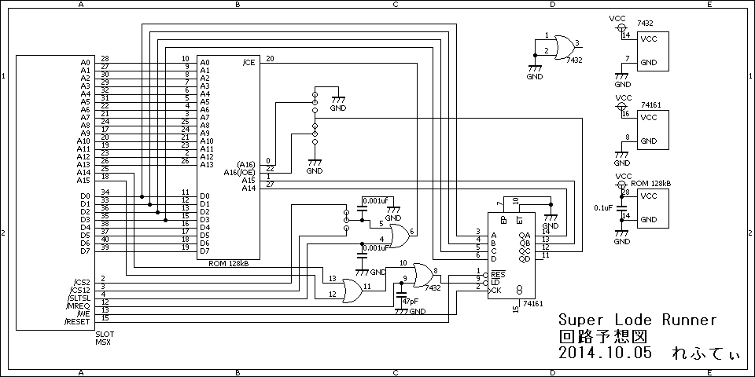
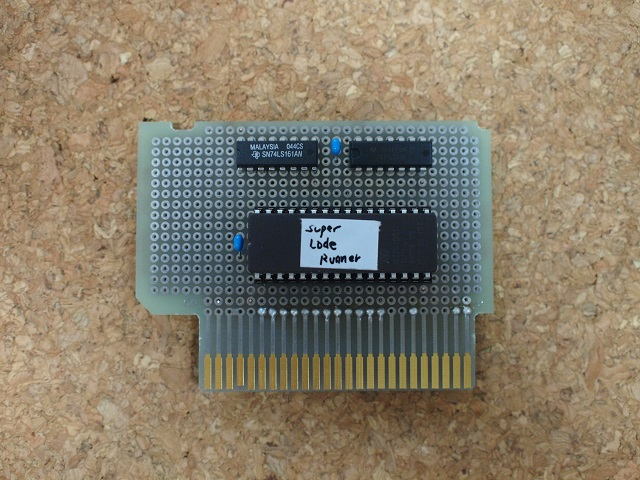
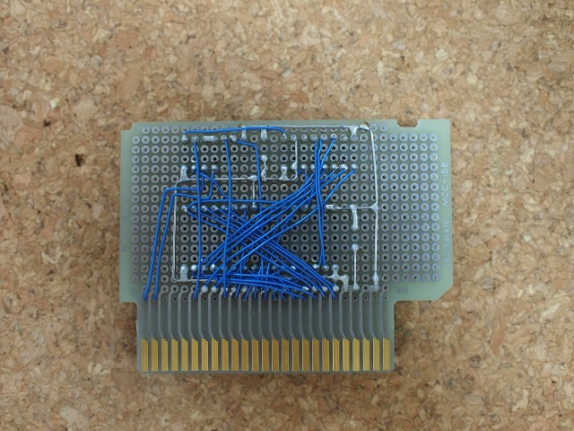
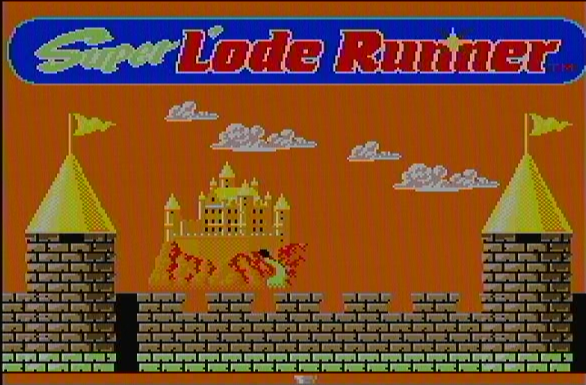
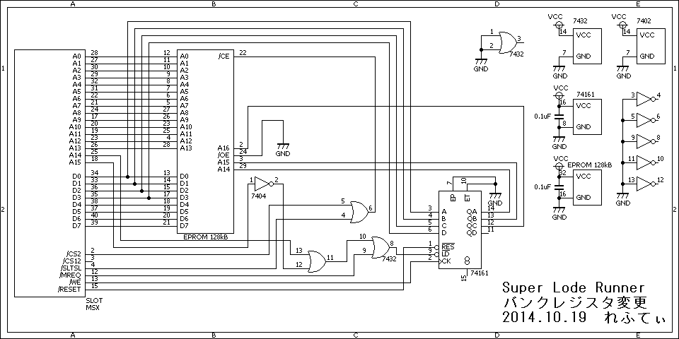
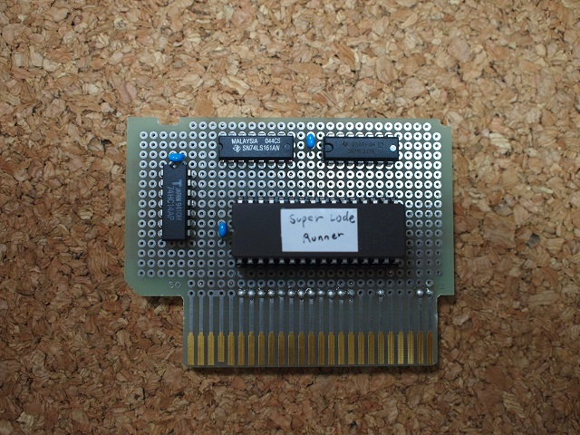
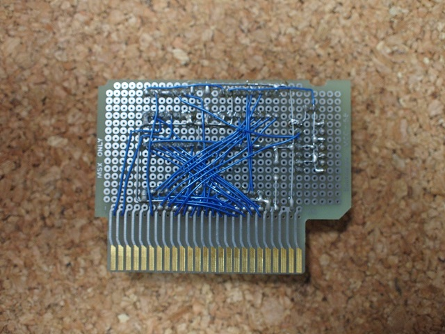

Super Lode Runnerの秘密
Super Lode Runnerはメガロムゲームでありながら、メガロムコントローラーを使っていないという異色のソフト。しかも何故かMSX2では動作しMSX turboRでは動かないとのこと。現物の入手が困難で困っていたところ、tyr105さんより写真を頂きましたので公開いたします。


一部見えない配線もあって、はっきりとは分からないのですが回路を予想してみるとこんな感じになります。

A14及びA15が0の時、つまりページ0(0000-3FFFh)への書き込みがバンク切り替えに使われているようです。切り替えが発生するのはページ2(8000-BFFFh)です。書き込むデータの下位3bitでバンクを指定しています。スロット指定が無いので、どこのスロットになっていてもページ0への書き込みがあればページ2のバンクが切り替わるようです。
半月状のジャンパが何ヶ所かありますが、右側のは/CS2(Short)と/CS12(Open)を切り替えるもので・・・/CS12に設定すればページ1からもROMが読めるようになるのだと思います。残りの部分は、1MbitのEPROMを載せる時の為のジャンパのようです。元から載っている1Mbit ROMは28ピンですが、1MbitのEPROMは32ピンでピン配置が1Mbit ROMと若干異なります。
一応、検証のために作ってみるとこんな感じです。ROMデータは検証用に一時借用(^-^;


あくまで回路図の検証用なのでコンデンサを省いたりしています。FS-A1WXで起動してみると見事に起動。MSX2+では問題なく起動するようです。

しかし、噂通りMSX turboR(FS-A1ST)では起動せず。
にがさん協力の下、解析を進めていったところ、どうやらバンク切り替えにページ0を使っているのが問題だとほぼ特定出来ました。ロジアナで調べないと証明までは出来ませんが、ページ0に存在しているMSX BIOSに対して書き込みを行っても、turbo Rでは書き込みの信号が出ない（/WR等が出ない）ようです。R800 DRAMモードではページ0がRAMにコピーされたBIOSになりますので、書き込み出来ない（書き込み動作しない）仕組みになっているようです。
ということで、ROMデータを解析し、バンク切り替えで使っている命令（LD (0000h),A、つまり32 00 00）を（LD (8000h),A、つまり32 00 80）にします。基板の方もA15が1、A14が0の時にバンクレジスタ（74LS161）への書き込みが行われるよう変更します。回路図はこんな感じになります。

元の回路図と対比出来るようにレイアウトを変えていないので、ちょっと見づらいかも知れません。うまく組めばもっとスマートな回路で出来るかも知れませんが、今回は一度作った基板を修正しているので・・・。


FS-A1WXでもFS-A1STでも見事に起動。本物のROMカートリッジをMSX turboRで動かすのは難しそうです。（ROMをバンクレジスタを変更したデータのEPROMに載せ替え、A15を反転させなければならない・・・。）